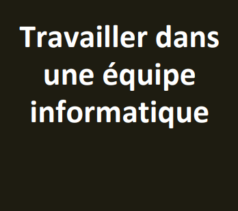

Competence 6
Apprentissages critiques

- appréhender l'écosystème numérique
- Découvrir les aptitudes requises selon les différents secteurs informatiques
- Identifier les statuts, les fonctions et les rôles de chaque membre d'une équipe pluridisciplinaire
- Acquérir les compétences interpersonnelles pour travailler en équipe